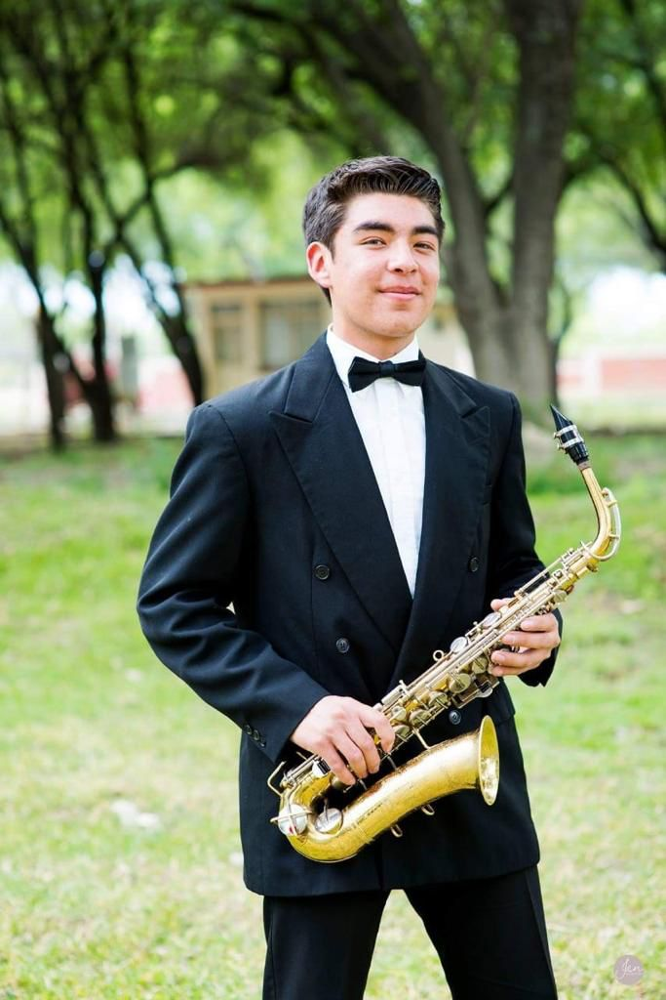
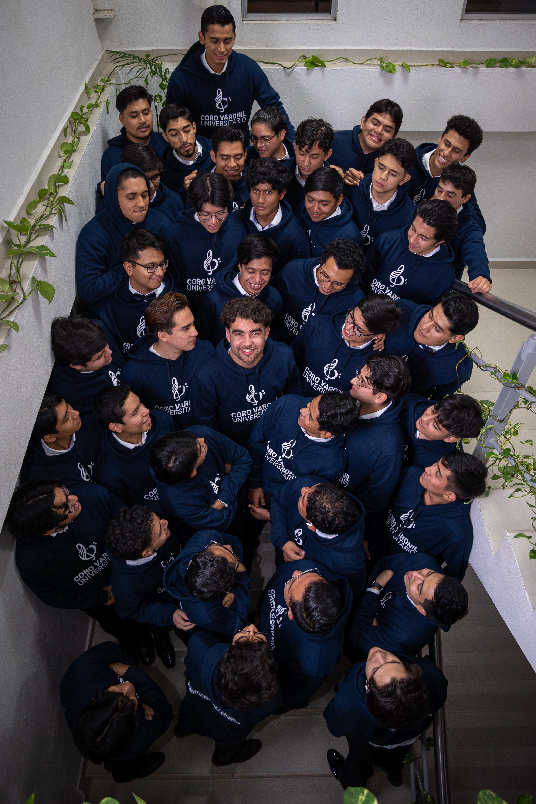
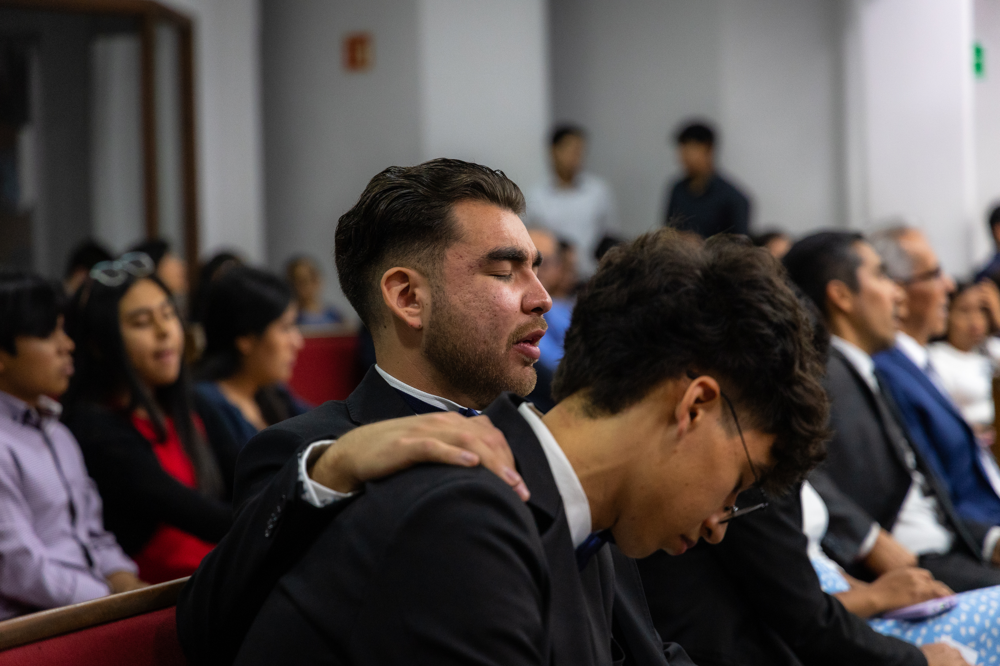
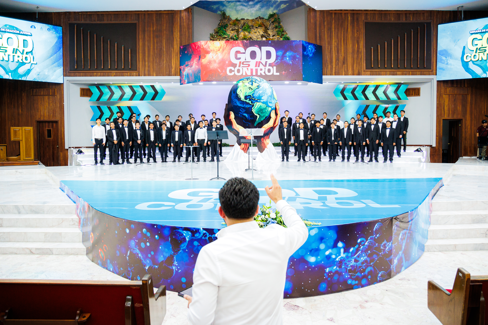
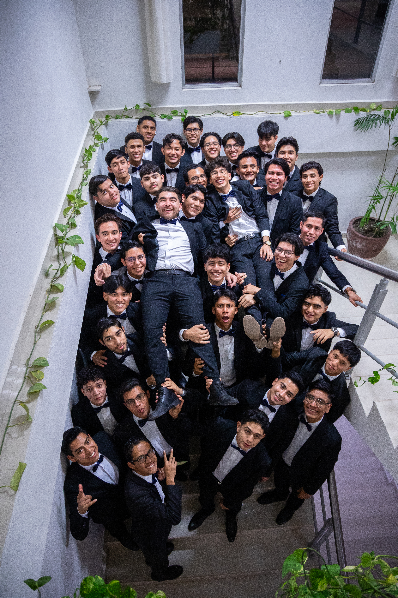

Quién soy como músico-educador, desde dónde lo hago y hacia dónde apunto. Una narrativa personal que integra cosmovisión, filosofía de enseñanza y los valores que orientan mi práctica artística y pedagógica.
Crecí en un hogar que, aunque enfrentaba distintos retos, estuvo marcado por el amor. Sin embargo, al mirar en retrospectiva desde mi etapa adulta, reconozco que existían carencias que no eran de tipo económico, sino formativo y emocional, y que requerían un acompañamiento con mayor impacto.
En ese contexto, hoy puedo valorar con mayor claridad la entrega de mi madre, quien realizó grandes esfuerzos para que yo tuviera acceso a experiencias musicales: la participación en una banda sinfónica, el canto coral y las clases de piano.
Estas vivencias no solo moldearon mi identidad, sino que también fomentaron en mí la disciplina, la constancia y la resiliencia. El impacto fue tan profundo que, con el tiempo, decidí dedicarme a la educación musical.

Con el tiempo comprendí que este proceso es cíclico: ahora me corresponde ofrecer a otros la posibilidad de crecer a través de la música, como alguien lo hizo conmigo.
También he aprendido que la música refleja pensamientos, culturas y formas de vida diversas, lo que me ha sensibilizado ante la realidad de que no todos percibimos el mundo de la misma manera. Desde esta conciencia, considero un privilegio acercarme a la subjetividad de otros a través de la música, entendida como una vía legítima de encuentro y comprensión mutua.
"Aspiro a que mis alumnos encuentren en la música un espacio donde puedan ser ellos mismos y desarrollar las capacidades que poseen, tanto a nivel artístico como personal."

Hace algunos meses concluí mi etapa docente con una alumna de guitarra que, al enterarse de mi salida de la ciudad, me entregó una carta que decía:
"Profe, quiero decirle que aprecio muchísimo la manera en que me ha acompañado. Usted ha sido un maestro que trasciende la clase: ha escuchado mis emociones, ha entendido mis silencios y me ha brindado palabras que me han fortalecido espiritualmente. Gracias por su paciencia, su guía y por recordarme que la música también sana."
Recibí este mensaje no como un reconocimiento aislado, sino como una confirmación del sentido de la labor que llevamos los docentes de esta área.
— Alumna de guitarra, Obregón, Sonora

Concibo la educación musical como un medio para formar estudiantes capaces de apreciar, comprender y utilizar la música como una herramienta de expresión y crecimiento integral.
Así como la música refleja una visión del mundo, también puede elegirse de manera intencional para apoyar objetivos emocionales, sociales y espirituales. Todo aquello que rodea nuestros sentidos influye en nuestro actuar; por ello, una formación musical guiada favorece el desarrollo de un carácter que eleve los pensamientos hacia aquello que es puro, noble y enaltecedor.
La experiencia en el aula me ha permitido dimensionar la necesidad de docentes preparados para enfrentar contextos diversos y retos cambiantes. Esto ha reforzado mi convicción de mantenerme en constante formación, tanto en el ámbito musical como en el didáctico.
"El compromiso con la formación continua es un principio firme en mi desarrollo profesional, aun reconociendo mis propias áreas de mejora."
— Elena G. de White, adaptado

Los valores que orientan mi actuar como educador son la entrega y el compromiso con la causa educativa. He comprobado que, cuando una labor me importa profundamente como la educación musical, estoy dispuesto a asumir la responsabilidad que implica.
Cuando algo me importa de verdad, asumo con plenitud la responsabilidad que implica.
No como perfeccionismo rígido, sino como actitud constante de dar lo mejor posible.
La estructura en el aula y en los proyectos permite que otros se desarrollen con confianza.
Levantarme ante los retos sin perder la humildad forma parte de mi identidad profesional.
Siguiente sección
Competencias del perfil de egreso